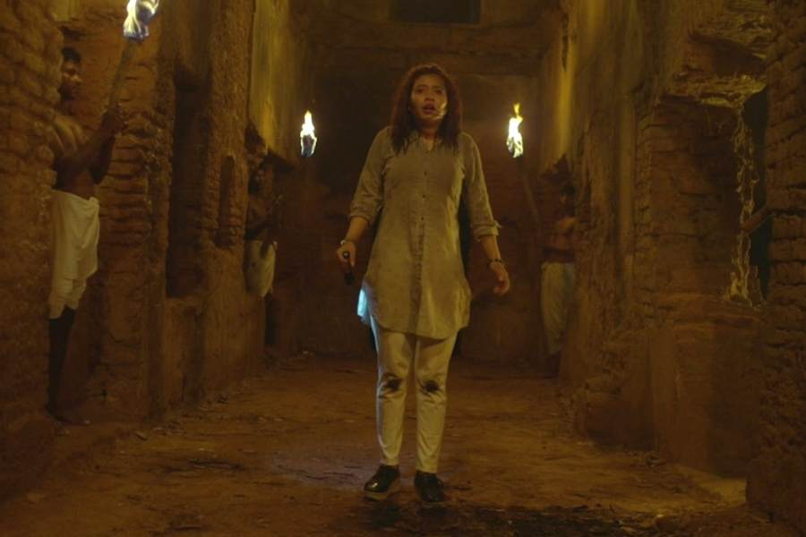
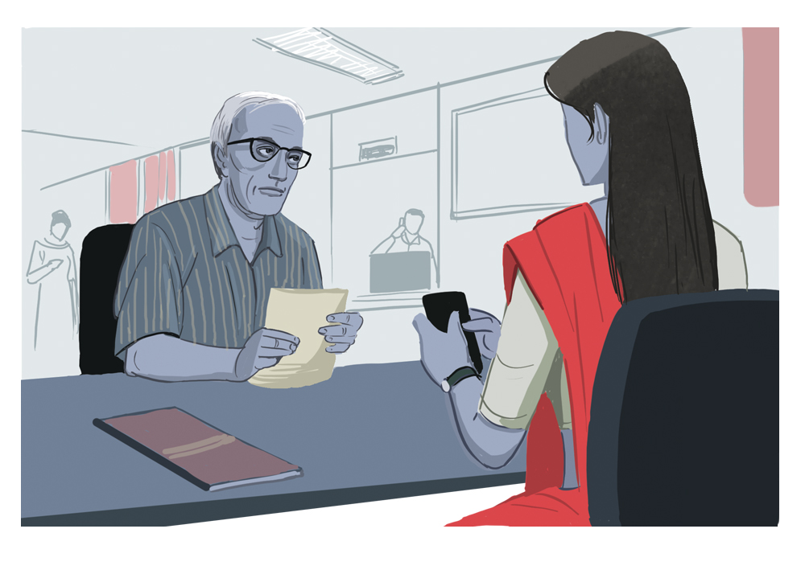
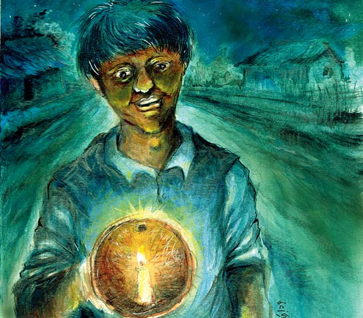
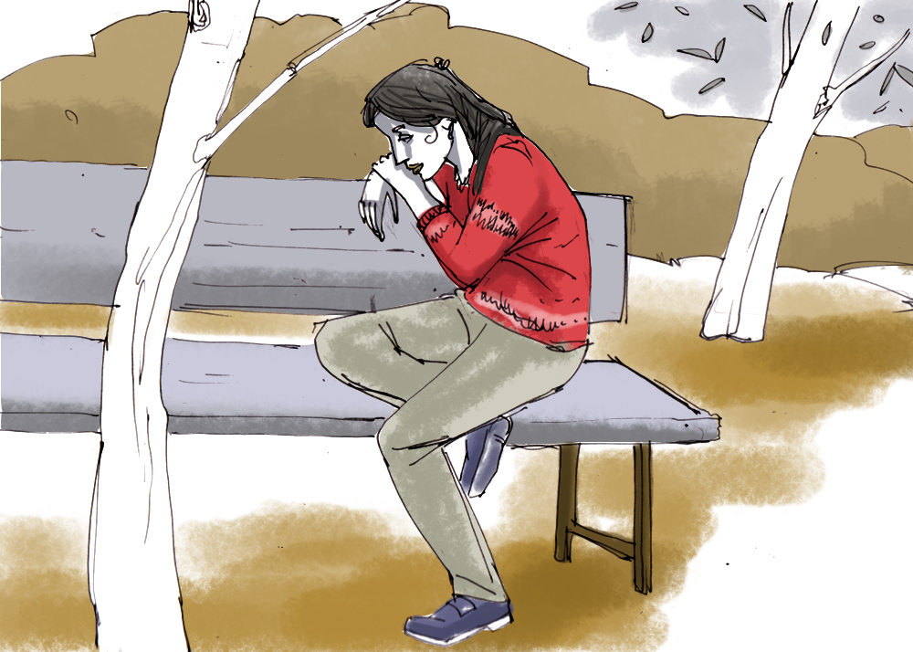
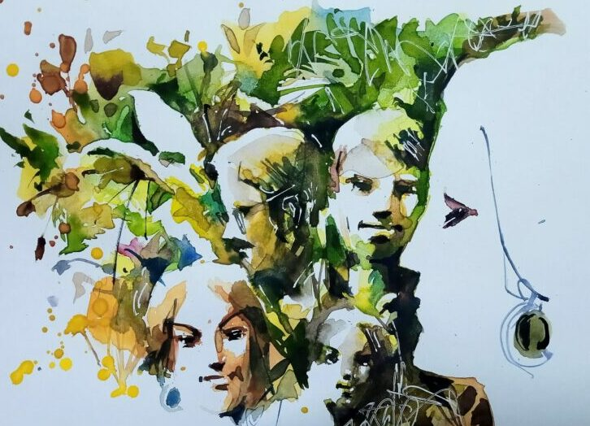
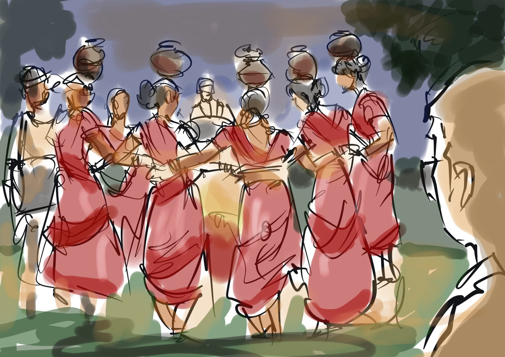

গল্প: ঘন জঙ্গলের মধ্যে গাড়ির সামনে এসে দাঁড়াল এক ছায়ামূর্তি, তারপর?
সময়টা ছিল শীতকাল। মেদিনীপুরে একটা অনুষ্ঠানে গিয়েছিলাম। আমার সঙ্গে মা ছাড়াও দলে আরও পাঁচ জন ছিলেন। শো শেষ করে কলকাতায় ফিরছি। সময়টা আমার এখনও মনে আছে- প্রায় শেষ রাত। তিনটে তেরো। মেদিনীপুর থেকে কলকাতায় ফেরার পথে মাঝখানে বড় একটা জঙ্গল। তার মধ্যে দিয়ে যাওয়ার সময়ে একটা জায়গায় হঠাৎ আমাদের গাড়িটা থেমে গেল। চার দিকে ঘুটঘুটে অন্ধকার। সামনে তাকিয়ে দেখি একটা অস্পষ্ট ধোঁয়ার অবয়ব। যেন কেউ দাঁড়িয়ে আছে। ভাল করে দেখেও ঠিক বোঝা যাচ্ছিল না। শুধু মনে হচ্ছিল সামনে কোনও কিছুর অবয়ব। কিছু ক্ষণের জন্য আমাদের হৃৎস্পন্দন যেন থেমে গিয়েছিল! আমাদের গাড়ি চালাচ্ছিলেন যিনি, তিনিও ঠিক বুঝে উঠতে পারছিলেন না কী করবেন। অদ্ভুত ভাবে ওই ছায়া মূর্তিটাও চুপ করে দাঁড়িয়েছিল।
আরও পড়ুন »

গল্প: ব্রাত্য
‘মিস্টার সার্কুলার ঢুকছেন। এই, কেউ ওঁকে আমার কাছে পাঠাবে না ।‘ প্রিয়া কাগজপত্র ছড়িয়ে বসল ।
‘আমার কাছেও না, আমি রেকর্ড–রুম থেকে ঘুরে আসছি ।‘ সঞ্জয় উঠে পড়ল ।
‘আমার কাছে আসবেন না, গতবার আমার নামেই তো কমপ্লেন করেছিলেন। বেঁচে গেছি।‘ চৌধুরীদা গলা নামিয়ে বললেন ।
মৃন্ময় কানে ফোন নিয়ে কাল্পনিক কারও সঙ্গে কথায় ব্যস্ত রইল। বাকিরাও ব্যস্ততার আড়ালে লুকোনো শ্রেয় মনে করছে। এই ভরা কাজের সময় এমন একজন কাস্টমারকে ডিল করা সত্যিই সমস্যা। অফিসসুদ্ধ সবাইকে তটস্থ করে তুলতে ভালোবাসেন ইনি। আর প্রতিবারই একটা কমপ্লেন লিখে দিয়েও যাবেন। এখানে লিখিত দেবেন কোনও কাস্টমার–সার্ভিসই ওঁর যথেষ্ট মনে হয় না, খুশি বা সন্তুষ্ট হওয়ার তো প্রশ্নই নেই।
সবাই কাজ বা অকাজের অজুহাত দিলেও অনিন্দিতার এড়িয়ে থাকার উপায় নেই।
আরও পড়ুন »

গল্প: ‘ভূত আমার পুত, পেত্নি আমার ঝি’দিন ছোট হয়ে এসেছে। টুপ করে পাটে যাচ্ছে সুয্যি। সপরিবার দুগ্গা ছলছল চোখে কৈলাসে ফিরে গিয়েছে। পাড়ায় পাড়ায় ঘুরে ‘আজ আমাদের লক্ষ্মীপুজো, দাও গো দু’টো ভাজাভুজো’ বলতে বলতে গলা ভেঙেছে খুদের দল। শুধু পড়ন্ত বিকেল মাঝেমধ্যে মনে পড়িয়ে দেয়, পুজোর ছুটি শেষ হতে চলল। পড়ে আছে হাতের লেখা। মুখস্থ হয়নি ‘এসেছে শরৎ, হিমের পরশ’। নয়ানজুলির দু’ধারে তখনও জেগে কাশফুল। মাথা দুলিয়ে অভয় দেয়, ‘ভয় কী রে! সামনে এখনও কালীপুজো, ভাইফোঁটা। তার পরে না স্কুল খুলবে!’ গুমোট মনকেমন উধাও। মাথার ভিতরে ফের শরতের রোদ্দুর।
ক’দিন পরেই অমাবস্যা। কালীপুজো। পাড়ার চণ্ডীমণ্ডপে চলছে ‘মিটিং’।
বাড়িতে বাড়িতে প্রদীপ, সলতে তৈরির ধুম। দুর্গাপুজোর নাড়ু-মুড়কি শেষ। ফের তৈরি হচ্ছে ঝুড়ি, মুড়ি, নারকেল, তিলের নাড়ু।
আরও পড়ুন »

গল্প: মাতৃত্বের স্বাদ।
“হ্যালো! মিস বিশ্বাস?”
অচেনা স্বর, কিন্তু বাঙালি উচ্চারণ। “ইয়েস, ’অ্যাম ডক্টর বিসওয়াস। হাউ ক্যান আই হেল্প ইউ?”
কোভিড-এর কড়া লকডাউন আলগা হবার পর, প্রায় রোজই দু’তিনটে নতুন ফোনকল পাই। যারা গৃহবন্দি অবস্থায় কোনও সাহায্য পায়নি, তারা এখন তেড়েফুঁড়ে ফোন করে। আবার অনেকে দীর্ঘদিন ঘরে আটকা থেকে বিপর্যস্ত হয়ে করে। এই মহিলা কোন দলে?
“আপনি বাংলা বলেন?”
আমার ইতিবাচক উত্তর শোনার আগেই ওদিক থেকে তোড়ে কথা ছুটল।
“আমি দেবত্রীর মা, অনসূয়া দাম। আপনার সঙ্গে দেখা করা অত্যন্ত প্রয়োজন। এখনই আসতে চাই। খুব দরকার। কতগুলো বিশেষ কথা আছে।”
দেবত্রী সরকার আমার পেশেন্ট। কয়েক মাস হল আসছে। তার মা? কিন্তু ‘দরকার’ বললেই ছাড়পত্র দিতে হবে নাকি! দেবত্রী নিজের থেকে আমার কাছে আসেনি—
আরও পড়ুন »

গল্প: পুরোনো চড়ুই পাখি।
‘স্মৃতি যেন ঠিক পুরোনো চড়ুই পাখি
নীল মাঠ থেকে উড়ে আসে জানালায়
খেলা করে ঘরে উঠোনে আলো ছায়ায়…’
বালিগঞ্জ ডাকঘরের ঠিক উলটোদিকের রাস্তায় একটা বহুতল আবাসন। সেখানে পাঁচ তলায় পুব-দক্ষিণ খোলা একটা বিশাল বড় ফ্ল্যাটে ইদানীং একাই থাকে দময়ন্তী। একটি বহুজাতিক সংস্থার যথেষ্ট উঁচু পদে কাজ করে সে। সারা দিনে চারপাশে মানুষজনের অভাব নেই; কিন্তু দিনের শেষে সে একা। প্রথম যৌবনে জীবন ছিল অন্যরকম। পড়াশুনোয় একটু বেশিই ভালো ছিল, জীবনে উচ্চাশাও ছিল নেহাত কম নয়; কিন্তু সেই সঙ্গে আর পাঁচটা সমবয়সী ছেলেমেয়ের মতো সে-ও ভালবাসার জন্য ছটফট করত, দেখিয়ে দিতে চাইত মেয়েরা ইচ্ছে করলেই কেমন দশভুজা হতে পারে! কিন্তু বিধি বাম! তীক্ষ্ণ মেধার সঙ্গে ধারালো সৌন্দর্য যখন জুটি বাঁধে, সেদিকে চোখ পড়লে আশঙ্কা থাকে অন্ধ হয়ে যাওয়ার।
আরও পড়ুন »

গল্প: কেয়ারিং।
ম্যাকেঞ্জি রিপোর্টের প্রিন্টটা হাতে নেয় অর্ক। সেখানে আগামী দিনের ভবিষ্যতবাণী সম্বলিত নানাবিধ সমীক্ষার ফলাফল, গ্রাফের ওঠানামা। কোভিডোত্তর ঘুরে দাঁড়ানো। দাঁড়াতে দাঁড়াতে রাশিয়া ইউক্রেন যুদ্ধের ধাক্কা! বিশ্বজুড়ে বাণিজ্য-আকাশে আবার কালো ছায়া। তেলের দাম ঊর্ধ্বমুখী, টাকার দাম পড়ছে। অবশ্য ডলারের দাম বাড়ায় অর্কদের সাময়িক আনন্দ। একই পরিমাণ রফতানি করে প্রাপ্ত ডলার ভাঙিয়ে, এখন অনেক বেশি টাকা ঘরে তুলতে পারছে। কিন্তু এ সুখের ঘরে কাঁটা হয়ে আছে কাঁচামাল আমদানির খরচ।
বোর্ড মিটিং-এ জবাবদিহি করার জন্য পড়াশুনা দরকার। চিফ ফিনান্স অফিসারের সাথে বসতে হবে। আগামী দুই হেড-এর দেখানো অংকগুলোতে অনেকটা জল মেশানোআছে। অর্কর বোঝা দরকার, ঠিক কতটা রোজগার ‘সত্যি’ হতে পারে? হাতে আর দু’দিন রয়েছে, তারপর কোম্পানির সমস্ত অংশীদারদের সম্মুখীন হতে হবে।
আরও পড়ুন »
গল্প: হোটেল রজার্স স্টে।
গাড়িটা যখন দার্জিলিং–এর খাড়াই পথে এসে মলের কাছে দাঁড়ালো তখন ঘড়িতে বিকেল পাঁচটা বেজে গ্যাছে। সারা রাস্তায় মাঝে মাঝেই বৃষ্টি হচ্ছিল। কিন্তু যাত্রাশেষের আধঘণ্টায় জাঁকিয়ে বৃষ্টি এল। শিলিগুড়ির ছেলে সুরেশের এসব রাস্তায় চলে অভ্যাস। সে ভরসা দিয়েছিল যতই আবহাওয়া খারাপ হোক, পাঁচটার মধ্যেই সে হোটেলে পৌঁছে দেবে আমাদের। কাদা–মাখা রাস্তার একপাশে গাড়িটা পার্ক করে সে অভয় দিল ‘আপনারা হোটেলের ভিতরে গিয়ে ওদের লোককে এসে মালপত্রগুলো নিয়ে যেতে বলুন স্যার। আমি আছি।‘ আমরা, মানে আমি, রঞ্জনা, পার্থ আর জয়শ্রী, একসঙ্গে ঢাল বেয়ে উঠে এলাম হোটেল রজার্স স্টে’র রিসেপশনে। কাচের দরজা ঠেলে ঢুকতেই ভেতরের উষ্ণতায় শরীর জুড়িয়ে গেল।
ম্যানেজার মিস্টার ব্রেগাঞ্জা কলকাতার লোক। মাঝবয়সী। একমুখ হাসি নিয়ে নিজের ঘর থেকে
আরও পড়ুন »
 গল্প: রূপকথা নয়।
গল্প: রূপকথা নয়।
রাত দশটা। নন্দিনী কফিশপে একা বসেছিল। আনমনে কফির চিনিটা গোলাচ্ছিল। আজ বহু বছর এই সময়টা এখানেই কাটায় সে— যতক্ষণ না কাফেটা বন্ধ হচ্ছে। কিন্তু আজকের মতন এতটা অন্যমনস্ক সে কখনও থাকে না। আসলে একটু আগে যা ঘটে গেছে তা সম্পূর্ণভাবে তার কাছে অপ্রত্যাশিত।
এ তল্লাটে সবাই নন্দিনীকে চেনে, জানে তার মেডিক্যাল কন্ডিশনের কথা। নন্দিনীর এক অদ্ভুত অসুখ আছে। খুবই বিরল। জেরোডার্মা পিগমেন্টোসাম। সোজা বাংলায় বলতে গেলে সূর্যের আলোতে তার অ্যালার্জি। সেই ছোটবেলায় ধরা পড়ে এই অদ্ভুত অসুখ। বহু রকম চিকিৎসায় কোনও সুরাহা হয়নি। ছোট থেকে নন্দিনীর মা তাকে আগলে আগলে রেখেছিল, সে দিনে বেরোতো না। হোম-স্কুলিং হয়েছিল। নন্দিনীর রুটিনটাই অন্যদের থেকে আলাদা ছিল। তার কাজকর্মের জগৎ ছিল রাতের বেলা। সারা রাত জেগে কাজ করত,
আরও পড়ুন »
আদর্শ ছেলে -কুসুমকুমারী দাশ
আমাদের দেশে হবে সেই ছেলে কবে
কথায় না বড় হয়ে কাজে বড় হবে ?
মুখে হাসি, বুকে বল তেজে ভরা মন
“মানুষ হইতে হবে” — এই তার পণ,
বিপদ আসিলে কাছে হও আগুয়ান,
নাই কি শরীরে তব রক্ত মাংস প্রাণ ?
হাত, পা সবারই আছে মিছে কেন ভয়,
চেতনা রয়েছে যার সে কি পড়ে রয় ?
সে ছেলে কে চায় বল কথায়-কথায়,
আসে যার চোখে জল মাথা ঘুরে যায় |
সাদা প্রাণে হাসি মুখে কর এই পণ —
“মানুষ হইতে হবে মানুষ যখন” |
কৃষকের শিশু কিংবা রাজার কুমার
সবারি রয়েছে কাজ এ বিশ্ব মাঝার,
হাতে প্রাণে খাট সবে শক্তি কর দান
তোমরা মানুষ হলে দেশের কল্যাণ|
সাত সাগরের মাঝি – ফররুখ আহমদ
কত যে আঁধার পর্দা পারায়ে ভোর হল জানি না তা ।
নারঙ্গি বনে কাঁপছে সবুজ পাতা ।
দুয়ারে তোমার সাত সাগরের জোয়ার এনেছে ফেনা।
তবু জাগলে না ? তবু, তুমি জাগলে না ?
সাত সাগরের মাঝি চেয়ে দেখো দুয়ারে ডাকো জাহাজ,
অচল ছবি সে, তসবির যেন দাঁড়ায়ে রয়েছে আজ ।
হালে পানি নাই, পাল তার ওড়ে নাকো,
হে নাবিক! তুমি মিনতি আমার রাখো;
তুমি ওঠে এসো, তুমি ওঠে এসো মাঝি মাল্লার দলে
দেখবে তোমার কিশতি আবার ভেসেছে সাগর জলে,
নীল দরিয়ায় যেন সে পূর্ণ চাঁদ
মেঘ তরঙ্গ কেটে কেটে চলে ভেঙে চলে সব বাঁধ ।
আরও পড়ুন »
বন্দনা – শাহ মুহম্মদ সগীর
প্রথমে প্রণাম করি এক করতার।
যেই প্রভুর জীবদানে স্থাপিলা সংসার।।
দ্বিতীয়ে প্রণাম কঁরো মাও বাপ পাত্র।
যান দয়া হন্তে জন্ম হৈল বসুধায়।।
পিঁপড়ার ভয়ে মাও না থুইলা মাটিতে।
কোল দিয়া বুক দিয়া জগতে বিদিত।।
অশক্য আছিলুঁ দুর্বল ছাবাল
তান দয়া হন্তে হৈল এ ধড় বিশাল।।
না খাই খাওয়াএ পিতা
কত দুক্ষে একে একে বছর গোঞাএ।।
পিতাক নেহায় জিউ জীবন যৌবন। তান ধারক কাহন।।
ওস্তাদে প্রণাম করো পিতা হন্তে বাড়।
দোসর-জনম দিলা তিঁহ সে অাহ্মার।।
আহ্মা পুরাবাসী আছ জথ পৌরজন।
ইস্ট মিত্র আদি জথ সভাসদগগণ।
তান সভান পদে মোহার বহুল ভকতি।
আরও পড়ুন »
আযান – কায়কোবাদ
কে ওই শোনাল মোরে আযানের ধ্বনি।
মর্মে মর্মে সেই সুর, বাজিল কি সুমধুর
আকুল হইল প্রাণ, নাচিল ধমনী।
কি মধুর আযানের ধ্বনি!
আমি তো পাগল হয়ে সে মধুর তানে,
কি যে এক আকর্ষণে, ছুটে যাই মুগ্ধমনে
কি নিশীথে, কি দিবসে মসজিদের পানে।
হৃদয়ের তারে তারে, প্রাণের শোণিত-ধারে,
কি যে এক ঢেউ উঠে ভক্তির তুফানে-
কত সুধা আছে সেই মধুর আযানে।
নদী ও পাখির গানে তারই প্রতিধ্বনি।
ভ্রমরের গুণ-গানে সেই সুর আসে কানে
কি এক আবেশে মুগ্ধ নিখিল ধরণী।
ভূধরে, সাগরে জলে নির্ঝরণী কলকলে,
আমি যেন শুনি সেই আযানের ধ্বনি।
আহা যবে সেই সুর সুমধুর স্বরে,
ভাসে দূরে সায়াহ্নের নিথর অম্বরে,
আরও পড়ুন »